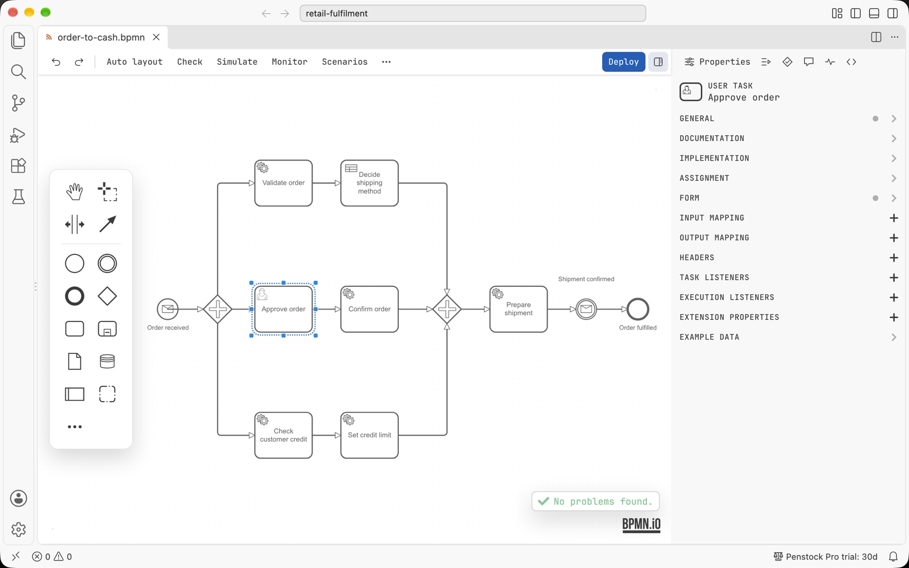

VS Code
Penstock is a VS Code extension. BPMN, DMN and form files open in the Penstock editor, and the project, the deployment, the licence and the links to your code work as they do in the JetBrains plugin.
Every feature of Penstock is described once, for every tool, in the Guide. This section only says what is special about VS Code: how to install it, where things are, and what is not there yet.

First steps
- Install the extension from the Visual Studio Marketplace. It needs VS Code 1.88 or later, and runs in the editors built on it: Cursor, Windsurf and VSCodium.
- Open a
.bpmn,.dmnor.formfile. It opens in the Penstock editor. - Read Where things are in VS Code.
- Then follow Getting started in the Guide.
Start here
Installing in VS CodePut Penstock into VS Code and check that it works.
Quick start in VS CodeInstall, open a diagram, check it and deploy it, on one screen.
Where things are in VS CodeThe editor, the sidebar, the command palette, the status bar and Problems.
Using it
Shortcuts in VS CodeThe four keys Penstock binds, and how undo works.
Code links in VS CodeCode lenses, go to definition, references, the Code view and Problems.
Licence and help
Licence in VS CodeThe status bar, the account dialog, signing in and machines.
TroubleshootingFiles that open as text, commands that are greyed out, and what is not available yet.
What works
- The BPMN, DMN and form editors, with the toolbar, the palette, the properties panel and the sidebar. The text document is the only history, so VS Code's own Undo, Redo, Revert and git all work on a diagram. Dedicated file icons for
.bpmn,.bpmn.xml,.bpmn20.xml,.dmnand.form. penstock.yaml, its layers per folder,penstock.local.yaml, profiles and${VAR}references. Schema validation runs forpenstock.yaml,penstock.ymlandpenstock.json, with configuration problems reported in the Problems view.- Deployment to Camunda 7 and Camunda 8, with passwords and client secrets kept in VS Code's secret storage.
- Scripts in their own tab, element templates, and the Check, Simulate, Monitor and Scenarios actions of the editor. Create element template at the caret in worker code.
- FEEL expressions with a syntax check, completion, documentation and a Run that evaluates them on sample values, and a step-by-step debugger that shows the value of each sub-expression.
- The AI chat: an input at the foot of the BPMN, DMN and form editors, or a Chat tab in the sidebar, that talks to the AI agent of your choice (Claude Code, Codex, Gemini CLI, OpenCode, any agent of the ACP Registry or your own command) on your own account. The chats are listed in the Chats view of the Penstock container, and Penstock: AI agents installs and turns on agents. Sending a message needs Pro. See AI chat.
penstock mcpregistered as an MCP server called Penstock, so GitHub Copilot's agent mode and any other MCP-capable chat in VS Code 1.101 or later list the Penstock tools with no configuration.- The Camunda 7 to Camunda 8 conversion, the migration report and the job worker skeletons, from the Migrate to Camunda 8 node of the Penstock view. Conversion asks one question, Convert … to Camunda 8 into …? The original file stays as it is., rather than showing a preview.
- Test-case files in the Test Explorer, with a Pro licence. Running tests from a diagram opens the test at the cursor and starts VS Code's testing commands.
- The visual diagram diff, from the Explorer and Source Control menus, with a Pro licence.
- Code links: code lenses, go to definition, references between diagrams and code, linked rename (F2 in code and rename offers in the editor; Pro), the Java debugger position on the diagram, and diagram and code problems in the Problems view with quick fixes.
- The Penstock tool window in the Activity Bar: a project tree with nodes for processes (with their scripts), workers, variables, messages, errors, decisions, forms, templates, deployment, files, and Migrate to Camunda 8. Its toolbar includes Run all, reload from disk, group by file, folders, Open penstock.yaml (creates the file if missing), and a Run Penstock menu with 9 CLI commands:
check,scenarios,junit,code,docs,format,change,export,doctor. Row menus offer Open, Find usages in code, Copy ID, Go to implementation, Deploy, test actions, and CLI commands on the row's file. Pro. - What's new notifications after an extension update.
- The licence, shared with the plugin and the command line. See Licence in VS Code.
- Every action of the editor as a command in the Command Palette, under Penstock.
- Your VS Code theme: the editor keeps its own layout and type and takes only its colour from the theme.
What is not there yet
- Debugger blocks for languages other than Java are not covered.
- Opening a node in the project tree happens on a click or Enter, without double-click opening.
- Running a test or debugging it from the project tree is best effort: the file opens at the test and runs through VS Code's testing commands at the cursor. The debugger section in the project tree stays empty.
- A pipeline. There is no pipeline in VS Code, so there is no Team tier here. The command line runs in a pipeline.
A feature that is missing says "not available in VS Code yet" when you reach for it. See Troubleshooting.
Pick your tool
The features are the same in every tool, and the licence is shared. Use the one that fits the job.